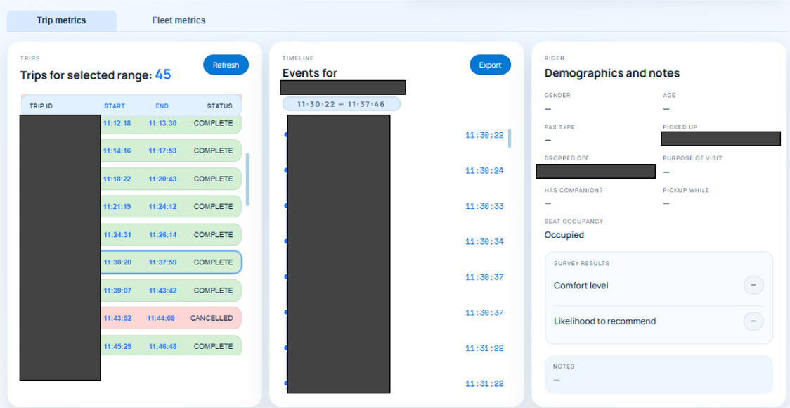
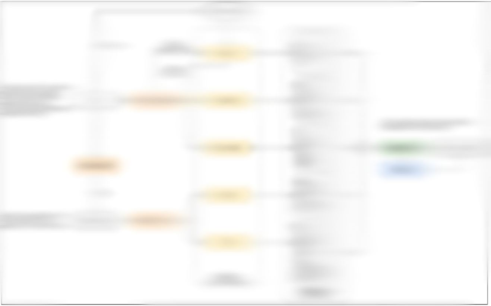

WORK PROJECT / CLOUD & APIS
Fleet data & analytics
An end-to-end data pipeline connecting robot events, airport operational data, and fleet analytics.
Project context
An autonomous fleet produces more than live position updates: each trip also generates events, sensor information, and operational context. This project brought those records together with data from airport operational systems in a shared cloud workflow. The aim was to turn information from multiple sources into trip histories, operational summaries, and performance metrics that fleet operators could explore through a web dashboard.
My contributions
- Developed secure API routes to capture robot events, contextual details, and sensor information for cloud processing.
- Aggregated data from multiple sources, including airport operational systems, into a cloud-based NoSQL database through structured API routes.
- Implemented client-side processing and cloud functions to transform collected records into operational insights and summaries.
- Built Angular charts and dashboard views for custom performance metrics, trip records, and event timelines.
- Worked across a framework developed primarily in C++, Python, and Angular, connecting data capture and processing with the operator-facing interface.
From trip records to operational context
The dashboard lets an operator move from a fleet-level time window to the details of an individual trip. The interface shows trip start and end times, completion or cancellation status, and timestamped events.
- Select a robot and time range
Focus the review on a particular unit and period of operation.
- Review the matching trips
Browse the trip list and select a journey for closer inspection.
- Inspect the event timeline
Follow the recorded sequence of events alongside the trip summary and available rider context.
This connects aggregate metrics with the underlying trip history, giving operators a way to examine what happened during a journey as well as review broader fleet activity.

